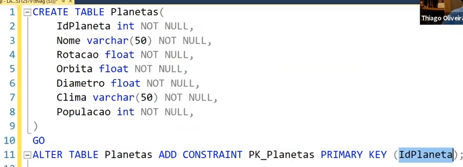
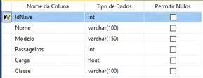
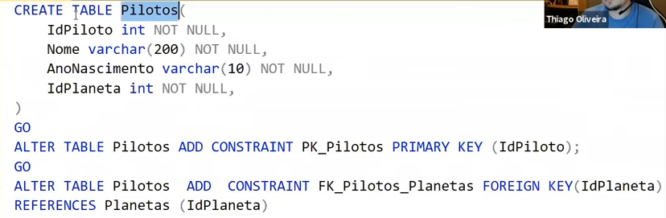
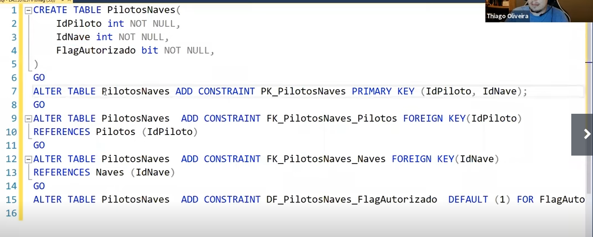
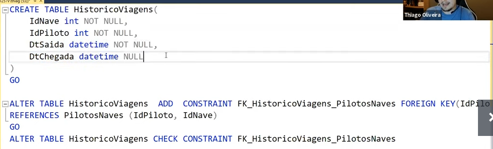

Uma dica que o professor deu sobre onde colocar a chave primária é fazer o diagrama de MER (modelo entidade relacionamento). 1 está para n, n está para 1 e assim por diante. Aquela entidade que é exclusivamente 1 é a chave principal. Em caso dos dois terem n, podemos criar uma tabela secundária que tem as chaves dos dois.
A chave primária é identificadora da tabela. Uma chave candidata é um CPF, que é uma que não se repete na tabela e pode ser usada como primary key. Geralmente é a primary key é autoincremental. O GO separa duas instruções.
O exemplo acima foi para criar a tabela Naves. Eu prefiro criar a tabela pelos comandos, é mais rápido.
A chave estrangeira FK_Pilotos_Planetas faz referência à chave primária da tabela de planetas.
Uma chave primária que faz referência a duas colunas indica que só pode haver uma combinação de dados das colunas uma única vez. Podemos exemplificar neste caso, que na tabela PilotosNaves, tanto o piloto João, quanto a nave Tucano podem aparecer quantas vezes forem necessárias, porém João como piloto da nave Tucano só pode aparecer uma vez na tabela.
A CONSTRAINT DEFAULT indica que caso não seja passado nenhum valor para a coluna especificada será considerado o valor default. No caso, caso não seja passado nenhum valor para (FOR) a coluna FlagAutorizado, será passado por padrão (DEFAULT) o valor de 1 (true).
O professor não explicou muito bem sobre esse CHECK CONSTRAINT
O professor criou uma programação em c# para puxar os dados da api para o banco de dados e também para executar queries de update e select no banco de dados.
Podemos em uma query do sql usar os métodos ltrim e rtrim para retirar espaços à esquerda e à direita de uma string. O argumento like faz uma busca aproximada de uma string de acordo com os parâmetros de aproximação passados.
Às vezes temos que optar por deletar um dado ou atribuir a ele um valor que indique que está desabilitado, porque muitas vezes precisamos de um histórico detalhado de um conjunto de dados.
No SQL Server, depois de feitas todas as colunas e definidas as keys, podemos criar um diagrama de banco de dados, que é um desenho com setas mostrando os relacionamentos das tabelas do banco.
Como boa prática é interessante colocar os nomes das tabelas no plural e nomes que sejam claros. Porém temos que nos atentar às regras da empresa que trabalhamos.